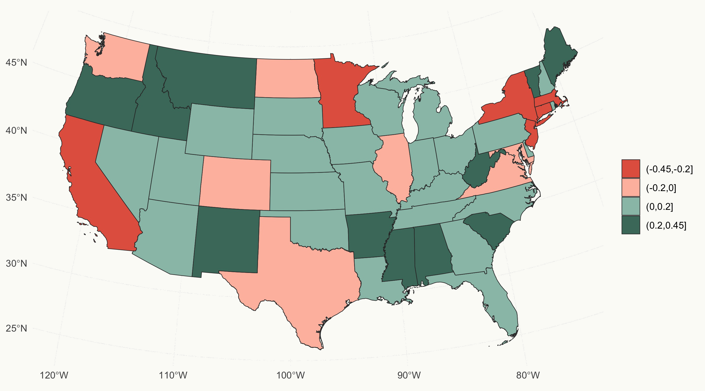
Publications
Optimal Subsidies for Residential Solar
with Mark Colas Journal of Political Economy Microeconomics. 2026 4:1, 213-264. DOI 10.1086/734142
We study the optimal design of spatially differentiated subsidies for residential solar panels. We build a structural model of solar panel demand and electricity production across the US and estimate the model by combining 1) remotely sensed data on residential solar panels, 2) power-plant-level data on hourly production and emissions, and 3) a state-of-the-art air pollution model. The current subsidies lead to severe spatial misallocation. National funding for subsidies under the current system exceeds the unconstrained optimum by over 70%. Our results suggest that there could be large welfare gains to redistributing funds towards other programs.
Final draft, CESifo Working Paper No. 10446
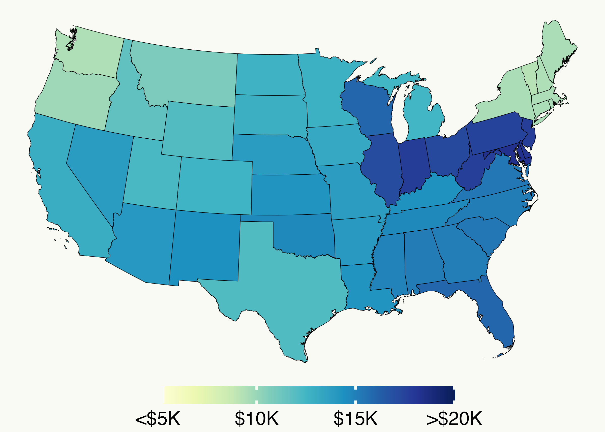
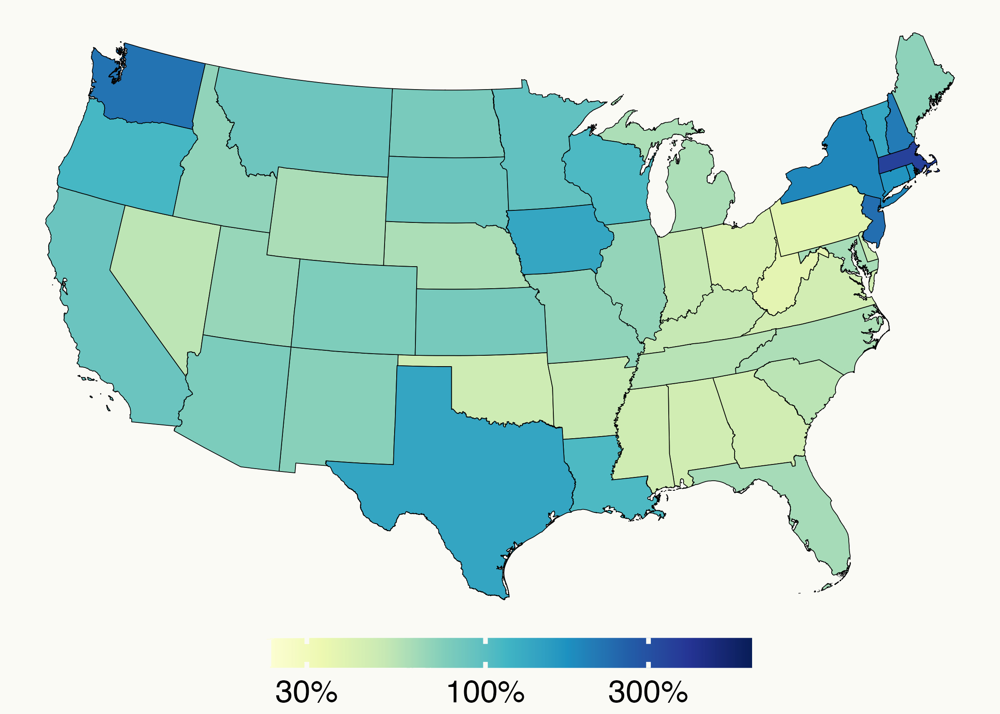
Glyphosate exposure and GM seed rollout unequally reduced perinatal health
with Ed Rubin Proceedings of the National Academy of Sciences. 122 (3), 2025. DOI 10.1073/pnas.2413013121
The advent of herbicide-tolerant genetically modified (GM) crops spurred rapid and widespread use of the herbicide glyphosate (GLY) throughout US agriculture. In the two decades following GM-seed’s introduction, the volume of GLY applied in the US increased by more than 750%. Despite its breadth and scale, science and policy remain unresolved regarding the effects of GLY on human health. We identify the causal effect of GLY exposure on perinatal health by combining (1) county-level variation in GLY use driven by (2) the timing of the GM technology and (3) differential geographic suitability for GM crops. Our results suggest the introduction of GM seeds and GLY significantly reduced average birthweight and gestational length. While we find effects throughout the birthweight distribution, low-weight births experienced the largest reductions: the effect for births in the lowest decile is 4.5 times larger than that of the highest decile. Together, these estimates suggest that GLY exposure caused previously undocumented and unequal health costs for rural US communities over the last 20 years.
Replication Code SSRN DOI 10.2139/ssrn.4867914 Press: Science, WaPo, Vox, Newsweek, OPB, UO News
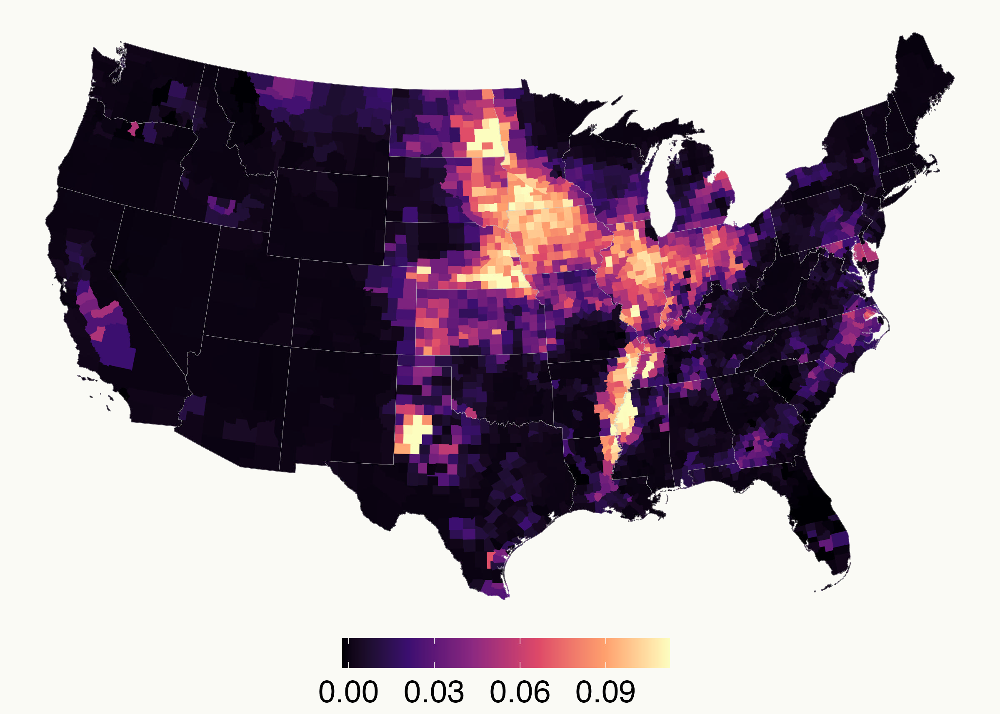
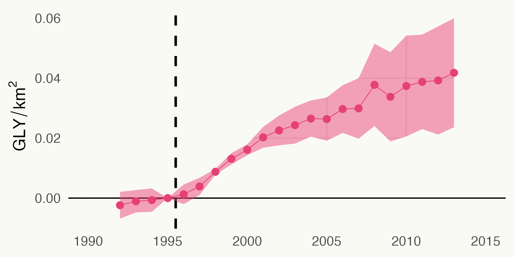
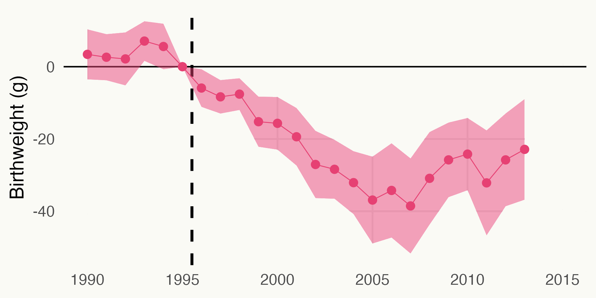
Vertical Migration Externalities
with Mark Colas Regional Science and Urban Economics. 2023 101, 103009. DOI 10.1016/j.regsciurbeco.2023.103900.
State income taxes affect federal income tax revenue by shifting the spatial distribution of households between high- and low-productivity states, thereby changing household incomes and tax payments. We derive an expression for these fiscal externalities of state taxes in terms of estimable statistics. An empirical quantification using American Community Survey data reveals that the externalities range from large and negative in some states, to large and positive in others. In California, an increase in the state income tax rate and the resulting change in the distribution of households across states lead to a decrease in federal income tax revenue of 39 cents for every dollar of California tax revenue raised. The externality amounts to a 0.27% decrease in total federal income tax revenue for a 1 pp increase in California’s state tax rate. Our results raise the possibility that state taxes may be set too high in high-productivity states, and set too low in low-productivity states.
Working Papers
Means Tested Solar Subsidies
with Mark Colas Revise and Resubmit, Journal of Political Economy Microeconomics.
We study the design of income-contingent subsidies for residential solar panels. Using remotely sensed data on solar panel installations across the US and a border-discontinuity design, we estimate that the responsiveness of installation rates to subsidies is strongly decreasing in income. Using these empirical elasticities, we estimate a model that embeds an installation decision into a dynamic consumption/savings framework with borrowing constraints. Counterfactuals reveal that switching to production-maximizing income-contingent subsidies leads to a nearly three-fold increase in public funds received by low-income households and a 2.4% increase in national solar production. Means-tested subsidies are justified on equity and efficiency grounds.
Current draft, CESifo Working Paper No. 11378.
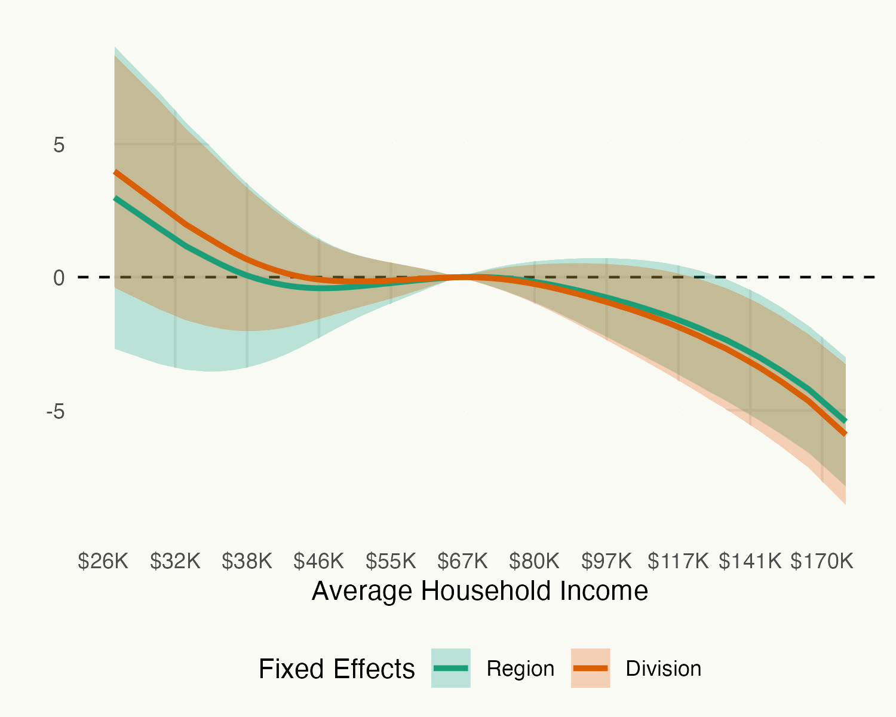
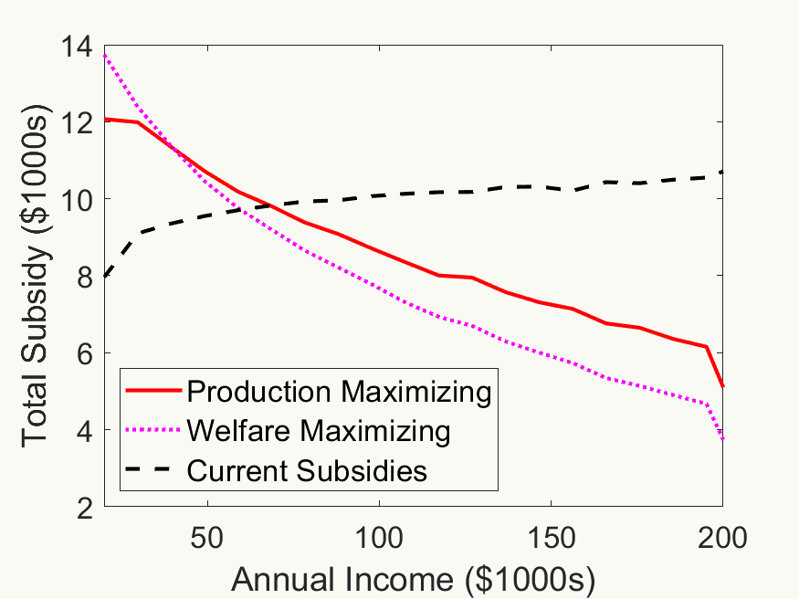
The Distributional Impacts of Climate Change across U.S. Local Labor Markets
with John Morehouse
Climate change has affected households around the globe, but its impacts are not homogenous across space. We first show that disadvantaged demographic groups are disproportionately exposed to climate change in the US and are less responsive in their adaptive behavior. Motivated by these findings, we develop and estimate a spatial equilibrium model of US local labor markets, allowing households to adapt to climate change by choosing where to live and, conditional on that choice, energy and housing consumption. Our results show that climate change to date has caused welfare losses 20% larger for black households relative to white households and twice as large for the lowest income decile relative to the highest income decile. We estimate that these gaps will continue to grow under projections of the future climate. Both the population’s ex-ante distribution and differential mobility contribute to the observed disparities. We then evaluate a $3 billion place-based policy from the Inflation Reduction Act, quantifying the tradeoff between subsidzing places with high climate damages and the resulting in-migration to climate-exposed areas.
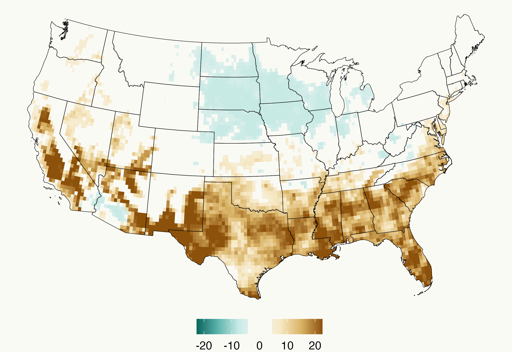
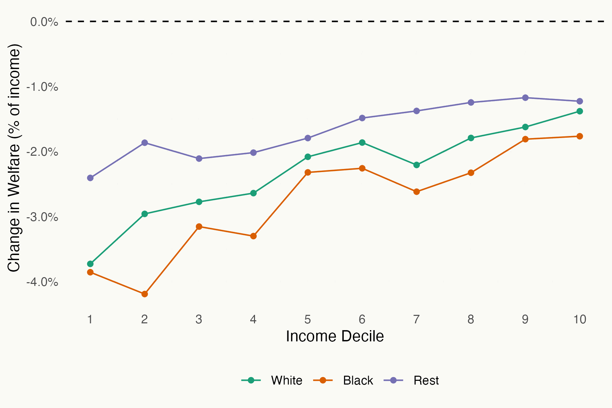
Works in Progress
Out-of-sight, Out-of-mind? Distance Decay in Use and Non-use Value of Water Quality
with Xibo Wan
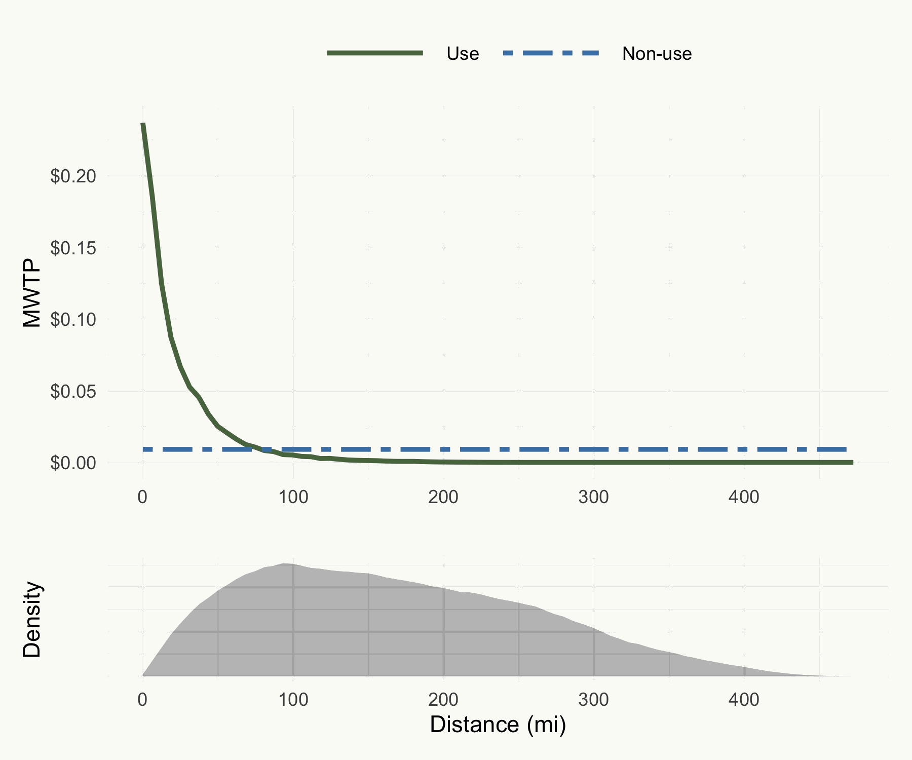